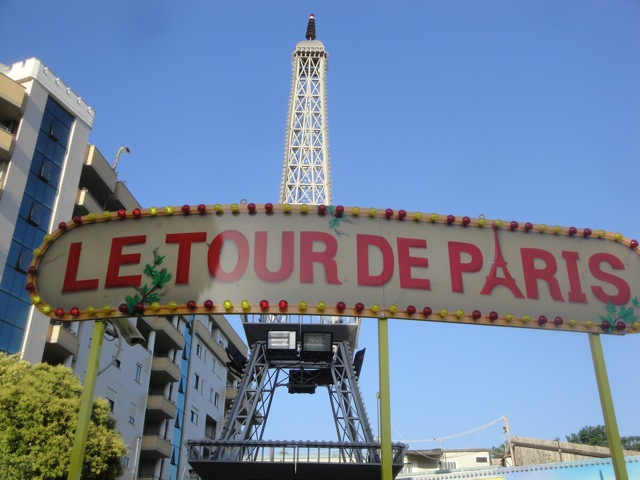

| |
Parco Morelli Review

Parco Morelli is a total credit whoring place. It's right smack dab in the middle of Rome. Just one of many credit whoring spots in Rome. However, it's not near any of the famous sites as nobody wants to see some crappy credit whoring coaster in front of the Colloseum or the Trevi Fountain or anything like that. So it's just a tiny little local park. And they have a credit. Which means hard core coaster enthusiasts will come here to try and obtain the credit. Not sure what the park thought of us as we were in and out of there in 15 minutes. I'm not sure what else to say about this park except...credit whoring. You can get a credit here. Other than that, it's only meant for super young kids.
Rollercoasters
There is a link to a review of all the Rollercoasters at Parco Morelli.
Kiddy Coasters
Le Tour de Paris Review

Flat Rides
Now I didn't ride any flat rides at Parco Morelli. I just came for credit whoring. But the only flat rides at Parco Morelli would be kiddy flats, which aren't anything special.
Water Rides
Parco Morelli currently has no water rides.
Dining
Not only did I did not eat at Parco Morelli, but I don't even think they sell food. Maybe there's something, but I honestly wouldn't be surprised if there wasn't anything. Just get some Rome Food, it's really good.
Theming and Other Attractions
Here are the reviews of all the other stuff at Parco Morelli. Well, there's technically no theming since it's just a crappy local park. And I honestly don't think there's anything else to this park. It's just kiddy flats and the kiddy coaster. Just go out and explore Rome.
In Conclusion
Parco Morelli is nothing more than a credit whore stop to most coaster enthusiasts. That's all there is here. This is the type of place that makes you look at yourself and say "Why do I have this stupid hobby?". So once you get your credit, just get out and find something cool to do. After all, you are in Rome.
Enthusiast FAQs.
*Are there kiddy coaster restrictions? - If you couldn't ride the kiddy coaster here, I would not be reviewing the place.

Tips
*Try to not look so ashamed doing your credit whoring.
*Have Fun!!!
Theme Park Category:
Credit Whoring
Location
Rome, Lazio, Italy
Last Day Visited
June 16, 2012
Video
There will NEVER be a Parco Morelli Video.
Complete Update List
2012
TPR's Mega Europe Trip
Here's a link to the parks website.
Home
|